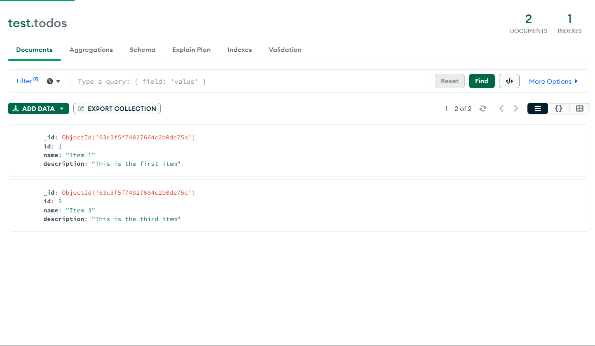

.png)
Configuration de MongoDB
// Introduction
Dans ce tutoriel, nous allons nous concentrer sur la configuration de MongoDB en tant que base de données et sur la création d'une connexion à la base de données dans notre API.
Avant de commencer, assurez-vous que MongoDB est installé sur votre système. Vous pouvez le télécharger et l'installer depuis le site officiel (https://www.mongodb.com/).
comprendre MongoDB
MongoDB est un programme de base de données orienté document multiplateforme. Il est classé comme un programme de base de données NoSQL, ce qui signifie qu'il n'utilise pas la base de données relationnelle tabulaire SQL traditionnelle. Au lieu de cela, il utilise des documents de type JSON avec des schémas optionnels.
Configuration de MongoDB
Pour configurer MongoDB, nous devons créer une base de données et démarrer le serveur MongoDB. Pour créer une base de données, ouvrez le terminal ou l'invite de commande et tapez la commande suivante :
$ mongod
Cela permettra de démarrer le serveur MongoDB sur votre système.
établir la connexion à la base de données
Pour établir une connexion à la base de données, nous devons installer le paquet Mongoose. Mongoose est un outil de modélisation d'objets MongoDB conçu pour fonctionner dans un environnement asynchrone. Pour l'installer, tapez la commande suivante dans votre terminal ou votre invite de commande :
$ npm install mongoose
Une fois l'installation terminée, vous pouvez créer un fichier nommé `database.js` dans votre dossier de configuration. Ce fichier contiendra le code permettant d'établir la connexion à la base de données à l'aide de Mongoose.
// Import mongoose
const mongoose = require('mongoose');
// mongoose connection
const mongoDB = process.env.MONGO_URL || null;
mongoose.connect(mongoDB, {
useNewUrlParser: true,
useUnifiedTopology: true,
})
.then(() => console.log('MongoDB Connected'))
.catch(err => console.log(err));
// Get connection
var db = mongoose.connection;
db.on('error', console.error.bind(console, 'MongoDB connection error:'));
Dans le code ci-dessus, nous avons importé le paquet mongoose et créé une connexion MongoDB à l'aide de la méthode mongoose.connect. Nous avons également défini les options `useNewUrlParser` et `useUnifiedTopology à true pour de meilleures performances.
La constante mongoDB contient l'URL permettant de se connecter au serveur MongoDB. Dans cet exemple, elle est définie sur la valeur de la variable d'environnement MONGO_URL. Si la variable d'environnement n'est pas définie, la constante mongoDB sera définie comme nulle.
Connexion de la base de données à notre API
Pour connecter la base de données à notre API, nous devons exiger le fichier database.js dans notre fichier index.js. Ajoutez la ligne de code suivante en haut de votre fichier index.js :
require('./config/database');
Voilà, c'est fait ! Nous avons réussi à configurer MongoDB et à le connecter à votre API.
- Assurez-vous que MongoDB est installé sur votre système avant de commencer ce tutoriel.
- Le serveur MongoDB doit fonctionner en arrière-plan lors de la connexion à la base de données.
Définition du modèle Mongoose :
Ensuite, vous allez définir le modèle Mongoose à l'aide de la méthode mongoose.model. Cette méthode prend deux paramètres : le nom du modèle et un schéma qui définit les propriétés du modèle. Par exemple :
const mongoose = require( 'mongoose')
const Items = mongoose.model( 'Items', {
id: { type: Number, required: true },
name: { type: String, required: true },
description: { type: String, required: true }
})
module.exports = { Items }
Une fois le modèle défini, vous pouvez effectuer diverses opérations CRUD sur la collection de documents, telles que la création de nouveaux documents, la lecture de documents existants, la mise à jour de documents et la suppression de documents.
// Exercice
ajouter des éléments dans votre base de donné grâce a `mongoDBCompass`
Voici un exemple possible pour cet exercice :
